Twenty-three years of removals, trimming and after-the-storm cleanup across Dubuque County. One crew, one name on the truck, and the same phone number the whole time.
Get a look at your treeMost of the work is the same handful of jobs. Here is what people actually call about.
Whole-tree takedowns, including trees too close to a house, a line, or a shed to simply drop. Rigged down in sections when there is no room to fell.
Clearing limbs off roofs, drives and power drops, and taking out the dead wood before the next storm does it for you.
Split trunks, hangers and blowdowns. The calls that come in the morning after a line of storms rolls up the Mississippi.
Grinding the stump out below grade so the spot can be seeded, sodded or built on instead of mowed around.
Brush, volunteer trees and overgrown fencelines cut back so a field edge or a building site is usable again.
A look at the tree before it comes down: whether it needs to go now, can be trimmed instead, or is fine to leave alone.
Not a franchise and not a storm-chaser. A Durango address and a Dubuque County work radius since 2003.

This is where your job photos go. Twenty-three years of takedowns and not one photo of them online. Send over a dozen and this section fills up.
Durango and the Dubuque County towns around it. If you are not sure whether you are in range, call and ask.
Yes. Somebody looks at the tree, tells you what it takes to get it down safely, and quotes it before anything gets cut.
That is part of the conversation up front. Some people want everything gone, some want the wood left cut and stacked. Say which when you call.
That is the normal job, not the unusual one. Trees close to a structure come down in sections and get lowered on ropes instead of dropped.
Storm weeks are first-come and triaged by what is dangerous. A trunk on a roof gets moved ahead of a limb on a lawn.
Yes, and it is worth deciding before the crew leaves. Grinding it on the same trip is cheaper than bringing the machine back out.
Since 2003, out of Durango, working Dubuque County.
Fastest way to get an answer is the phone. The form works too if it is easier.
Ring the number and describe the tree. Where it is, how big, and what is underneath it.
(563) 663-0693Mark's Tree Care · Durango, Iowa
Hi, this is Mark's Tree Care in Durango. Tell me what tree you are looking at and I will get right back to you.